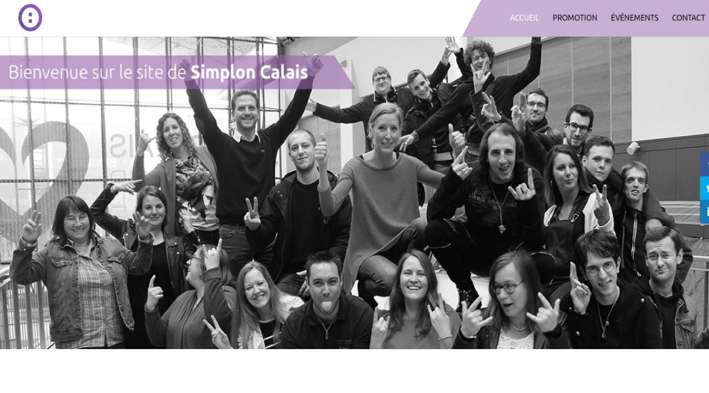
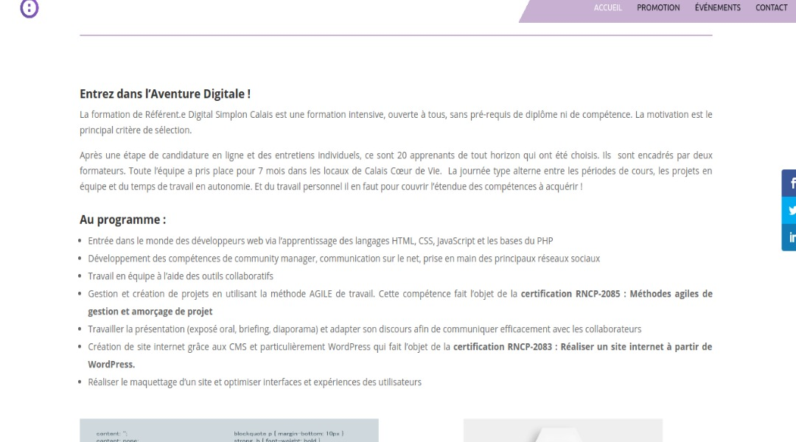

<section class="background img">
    <section class="backcolor">
      <div class="position-titre">
              <h1>Projet Simplon Calais</h1>
      </div> 
      <div class="img">
        
      </div>
      <div class="blocktexte">Premier projet réalisé en collaboration avec Sébastien ROBBE et Jean Batiste GUCHE. L'objectif du projet était d'expliquer le but de la formation référent digital, il devait être opérationnel pour la cérémonie de clôture de la formation.</div>
      <div class="img">
        
      </div>
      <div class="blocktexte">Le but était d'apprendre a utilisé WordPress pour la première fois, le projet nous a pris un peu plus de deux mois à être réalisé.</div>
      <div class="img">
        <a href="http://calais.simplon.co/">
          <span>Voir le projet</span>
          <span>Voir le projet</span>
          <span>Voir le projet</span>
          <span>Voir le projet</span>
        </a>
      </div>
    </section>
    </section>